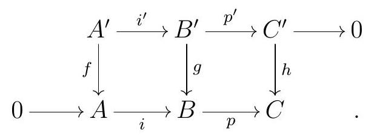
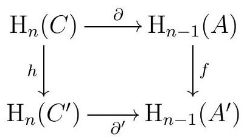

Section 2.3 Long Exact Sequences
Subsection The Snake Lemma
“”―
A long exact sequence is just what it sounds like: an exact sequence that is, well, long. Usually, we use the term long exact sequence to refer to any exact sequence, especially if it is not a short exact sequence. So in particular, a long exact sequence does not literally have to be that long.
Long exact sequences arise naturally in various ways, and are often induced by some short exact sequence. The first long exact sequence one encounters is the long exact sequence on homology. All other long exact sequences are, in some way, a special case of this one. The main tool we need to build it is the Snake Lemma.
Theorem 2.41. Snake Lemma.
Consider the commutative diagram of \(R\)-modules

If the rows of the diagram are exact, then there exists an exact sequence
\begin{equation*}
\operatorname{ker} f \longrightarrow \operatorname{ker} g \longrightarrow \operatorname{ker} h \stackrel{\partial}{\longrightarrow} \operatorname{coker} f \longrightarrow \operatorname{coker} g \longrightarrow \text { coker } h
\end{equation*}
Given \(c^{\prime} \in \operatorname{ker} h\text{,}\) pick \(b^{\prime} \in B^{\prime}\) such that \(p^{\prime}\left(b^{\prime}\right)=c^{\prime}\text{,}\) and \(a \in A\) such that \(i(a)=g\left(b^{\prime}\right)\text{.}\) Then
\begin{equation*}
\partial\left(c^{\prime}\right)=a+\operatorname{im} f \in \operatorname{coker} f
\end{equation*}
The picture to keep in mind (and which explains the name of the lemma) is the following:
Proof.
If \(a^{\prime} \in \operatorname{ker} f\text{,}\) then
\begin{equation*}
g\left(i^{\prime}\left(a^{\prime}\right)\right)=i f\left(a^{\prime}\right)=0
\end{equation*}
by commutativity, so \(i^{\prime}\left(a^{\prime}\right) \in \operatorname{ker} g\text{.}\) Similarly, if \(b^{\prime} \in \operatorname{ker} g\) then \(p^{\prime}\left(b^{\prime}\right) \in \operatorname{ker}(g)\text{.}\) So
\begin{equation*}
A^{\prime} \stackrel{i^{\prime}}{\longrightarrow} B^{\prime} \stackrel{p^{\prime}}{\longrightarrow} C^{\prime} \quad \text { restrict to maps } \quad \operatorname{ker} f \stackrel{i^{\prime}}{\longrightarrow} \operatorname{ker} g \stackrel{p^{\prime}}{\longrightarrow} \operatorname{ker} h \text {. }
\end{equation*}
We claim that the sequence obtained by restriction
\begin{equation*}
\operatorname{ker} f \stackrel{i^{\prime}}{\longrightarrow} \operatorname{ker} g \stackrel{p^{\prime}}{\longrightarrow} \operatorname{ker} h
\end{equation*}
is exact. On the one hand, we already know that the original maps satisfy \(p^{\prime} i^{\prime}=0\text{,}\) so their restrictions must satisfy this as well, guaranteeing that
\begin{equation*}
i^{\prime}(\operatorname{ker} f) \subseteq \operatorname{ker}\left(\operatorname{ker} g \stackrel{p^{\prime}}{\rightarrow} \operatorname{ker} h\right)
\end{equation*}
On the other and, if \(b^{\prime} \in \operatorname{ker} g\) is such that \(p^{\prime}\left(b^{\prime}\right)=0\text{,}\) then by exactness of the original sequence there exists \(a^{\prime} \in A^{\prime}\) such that \(i^{\prime}\left(a^{\prime}\right)=b^{\prime}\text{;}\) we only need to check that we can choose such \(a^{\prime}\) satisfying \(a^{\prime} \in \operatorname{ker} f\text{.}\) An indeed, by commutativity, any \(a^{\prime}\) with \(i^{\prime}\left(a^{\prime}\right)=b^{\prime}\) satisfies
\begin{equation*}
i f\left(a^{\prime}\right)=g i^{\prime}\left(a^{\prime}\right)=g\left(b^{\prime}\right)=0 \text {, }
\end{equation*}
and since \(i\) is injective, we must have \(f\left(a^{\prime}\right)=0\text{.}\) So we have shown that the following is an exact sequence:
\begin{equation*}
\operatorname{ker} f \stackrel{i^{\prime}}{\longrightarrow} \operatorname{ker} g \stackrel{p^{\prime}}{\longrightarrow} \operatorname{ker} h
\end{equation*}
Similarly, if \(a \in \operatorname{im} f\text{,}\) the commutativity of the diagram guarantees that \(i(a) \in \operatorname{im} g\text{,}\) and if \(b \in \operatorname{im} g\text{,}\) then \(p(b) \in \operatorname{im} h\text{.}\) So the maps \(A \stackrel{i}{\longrightarrow} B \stackrel{p}{\longrightarrow} C\) restrict to maps
\begin{equation*}
\operatorname{im} f \stackrel{i}{\longrightarrow} \operatorname{im} g \stackrel{p}{\longrightarrow} \operatorname{im} h
\end{equation*}
which then induce maps
\begin{equation*}
\text { coker } f \longrightarrow \text { coker } g \longrightarrow \text { coker } h \text {. }
\end{equation*}
To make the notation less heavy, we denote the induced maps on the quotients by \(i\) and \(p\text{.}\) Again, the fact that \(p i=0\) automatically gives us that the restrictions satisfy
\begin{equation*}
\operatorname{im}(\operatorname{coker} f \rightarrow \operatorname{coker} g) \subseteq \operatorname{ker}(\operatorname{coker} g \rightarrow \operatorname{coker} h)
\end{equation*}
so we only need to check equality. Consider \(b+\operatorname{im} g\) such that \(p(b+\operatorname{im} g)=0\text{,}\) meaning that \(p(b)=0\text{,}\) meaning that \(p(b) \in \operatorname{im} h\text{.}\) Let \(c^{\prime} \in C\) be such that \(h\left(c^{\prime}\right)=p(b)\text{.}\) Since \(p^{\prime}\) is surjective, there exists \(b^{\prime} \in B^{\prime}\) such that \(p^{\prime}\left(b^{\prime}\right)=c^{\prime}\text{,}\) and by commutativity,
\begin{equation*}
p g\left(b^{\prime}\right)=h p^{\prime}\left(b^{\prime}\right)=h\left(c^{\prime}\right)=p(b) \text {. }
\end{equation*}
Then \(b-g\left(b^{\prime}\right) \in \operatorname{ker} p=\operatorname{im} i\text{.}\) Let \(a \in A\) be such that \(i(a)=b-g\left(b^{\prime}\right)\text{.}\) Now in coker \(g\) we have
\begin{equation*}
\begin{aligned}
b+\operatorname{im} g & =b-g\left(b^{\prime}\right)+\operatorname{im} g \\
& =i(a)+\operatorname{im} g \\
& =i(a+\operatorname{im} f)
\end{aligned}
\end{equation*}
This concludes the proof of exactness of \(\operatorname{ker} f \longrightarrow \operatorname{ker} g \longrightarrow \operatorname{ker} h \quad\) and \(\quad\) coker \(f \longrightarrow \operatorname{coker} g \longrightarrow\coker h\text{.}\)
We still need to show the parts of the statement related to the connecting homomorphism \(\partial\text{.}\) Our definition of \(\partial\) can be visualized as follows:
Let’s recap the process in words. First, we fix \(c^{\prime} \in \operatorname{ker} h \subseteq C^{\prime}\text{.}\) Since \(p^{\prime}\) is surjective, we can always pick \(b^{\prime} \in B^{\prime}\) such that \(p^{\prime}\left(b^{\prime}\right)=c^{\prime}\text{.}\) Since \(c^{\prime} \in\) ker \(h\text{,}\) by commutativity we have
\begin{equation*}
p g\left(b^{\prime}\right)=h p^{\prime}\left(b^{\prime}\right)=h\left(c^{\prime}\right)=0,
\end{equation*}
so \(g\left(b^{\prime}\right) \in \operatorname{ker} p=\operatorname{im} i\text{.}\) Therefore, there exists \(a \in A\) such that \(i(a)=g\left(b^{\prime}\right)\text{.}\) In fact, since \(i\) is injective, there exists a unique \(a \in A\) such that \(i(a)=g\left(b^{\prime}\right)\text{.}\) Our definition of \(\partial\left(c^{\prime}\right)\) sets
\begin{equation*}
\partial\left(c^{\prime}\right)=a+\operatorname{im} f \in \operatorname{coker} f .
\end{equation*}
The fact that \(\partial\) is a homomorphism of \(R\)-modules follows from the fact that all the maps involved are homomorphisms of \(R\)-modules: given \(c_{1}^{\prime}, c_{2}^{\prime} \in \operatorname{ker} h\text{,}\) and \(b_{1}^{\prime}, b_{2}^{\prime} \in B^{\prime}, a_{1}, a_{2} \in A\) such that
\begin{equation*}
p^{\prime}\left(b_{1}^{\prime}\right)=c_{1}^{\prime}, \quad p^{\prime}\left(b_{2}^{\prime}\right)=c_{2}^{\prime}, \quad i\left(a_{1}\right)=g\left(b_{1}^{\prime}\right), \quad i\left(a_{2}\right)=g\left(b_{2}^{\prime}\right),
\end{equation*}
we have
\begin{equation*}
i\left(a_{1}+a_{2}\right)=i\left(a_{1}\right)+i\left(a_{2}\right)=g\left(b_{1}^{\prime}\right)+g\left(b_{2}^{\prime}\right)=g\left(b_{1}^{\prime}+b_{2}^{\prime}\right) \text {, }
\end{equation*}
So
\begin{equation*}
\partial\left(c_{1}^{\prime}\right)=a_{1}+\operatorname{im} f, \quad \partial\left(c_{2}^{\prime}\right)=a_{2}+\operatorname{im} f, \quad \text { and } \quad \partial\left(c_{1}^{\prime}+c_{2}^{\prime}\right)=\left(a_{1}+a_{2}\right)+\operatorname{im} f
\end{equation*}
Therefore, \(\partial\left(c_{1}^{\prime}\right)+\partial\left(c_{2}^{\prime}\right)=\partial\left(c_{1}^{\prime}+c_{2}^{\prime}\right)\text{.}\) Similarly, given any \(r \in R\text{,}\) \(r\left(a_{1}+\operatorname{im} f\right)=r a_{1}+\operatorname{im} f, \quad i\left(r a_{1}\right)=r i\left(a_{1}\right)=r g\left(b_{1}^{\prime}\right)=g\left(r b_{1}^{\prime}\right), \quad\) and \(\quad p^{\prime}\left(r b_{1}\right)=r p^{\prime}\left(b_{1}\right)=r c_{1}\text{,}\) so \(\partial\left(r c_{1}\right)=r\left(a_{1}+\operatorname{im} f\right)=r \partial\left(c_{1}\right)\text{.}\) We now need to show the following:
Points 2) and 3) together say that the sequence \(\operatorname{ker} g \longrightarrow \operatorname{ker} h \stackrel{\partial}{\longrightarrow} \operatorname{coker} f \longrightarrow \operatorname{coker} g\) is exact, and this will complete the proof.
First, let’s show that \(\partial(0)\) is well-defined. Ultimately, our definition of \(\partial\) only involves one choice, when we pick \(b^{\prime} \in B^{\prime}\) such that \(p^{\prime}\left(b^{\prime}\right)=0\text{;}\) we need to show that \(\partial(0)\) does not depend on the choice of \(b^{\prime}\text{.}\) Given \(b^{\prime} \in B^{\prime}\) such that \(p^{\prime}\left(b^{\prime}\right)=0\text{,}\) by exactness we have \(b^{\prime} \in \operatorname{ker} p^{\prime}=\operatorname{im} i^{\prime}\text{.}\) Therefore, there exists \(a^{\prime} \in A^{\prime}\) such that \(i^{\prime}\left(a^{\prime}\right)=b^{\prime}\text{.}\) Notice that \(a:=f\left(a^{\prime}\right) \in A\) is such that
\begin{equation*}
i(a)=i f\left(a^{\prime}\right)=g i^{\prime}\left(a^{\prime}\right)=g\left(b^{\prime}\right) .
\end{equation*}
Thus our definition says that \(\partial(0)=a+\operatorname{im} f \in \operatorname{coker} f\text{.}\) Since \(a=f\left(a^{\prime}\right) \in \operatorname{im} f\text{,}\) we conclude that \(a+\operatorname{im} f=0\text{,}\) so \(\partial(0)=0\) for any choice of \(b^{\prime}\text{.}\) Now consider any \(c^{\prime} \in \operatorname{ker} h\text{.}\) Again, to show \(\partial\) is well-defined, we need only to show it does not depend on the choice of \(b^{\prime}\) such that \(p^{\prime}\left(b^{\prime}\right)=c^{\prime}\text{.}\) Consider \(b_{1}^{\prime}, b_{2}^{\prime} \in B^{\prime}\) such that
\begin{equation*}
p^{\prime}\left(b_{1}^{\prime}\right)=p^{\prime}\left(b_{2}^{\prime}\right)=c^{\prime},
\end{equation*}
and \(a_{1}, a_{2} \in A\) such that
\begin{equation*}
i\left(a_{1}\right)=g\left(b_{1}^{\prime}\right) \quad \text { and } \quad i\left(a_{2}\right)=g\left(b_{2}^{\prime}\right) \text {. }
\end{equation*}
Note that
\begin{equation*}
i\left(a_{1}-a_{2}\right)=g\left(b_{1}^{\prime}-b_{2}^{\prime}\right)
\end{equation*}
and since
\begin{equation*}
p^{\prime}\left(b_{1}^{\prime}-b_{2}^{\prime}\right)=c^{\prime}-c^{\prime}=0
\end{equation*}
we must have
\begin{equation*}
a_{1}-a_{2}+\operatorname{im} f=\partial(0)=0
\end{equation*}
Thus
\begin{equation*}
a_{1}+\operatorname{im} f=a_{2}+\operatorname{im} f,
\end{equation*}
and this concludes our proof that \(\partial\) is well-defined.
Now we show 2): that \(p^{\prime}(\operatorname{ker} g)=\operatorname{ker} \partial\text{.}\)
If \(b^{\prime} \in \operatorname{ker} g\text{,}\) then the only \(a \in A\) such that \(i(a)=g\left(b^{\prime}\right)=0\) is \(a=0\text{.}\) Therefore, \(\partial\left(p^{\prime}\left(b^{\prime}\right)\right)=0\text{,}\) so \(p^{\prime}(\operatorname{ker} g) \subseteq \operatorname{ker} \partial\text{.}\) On the other hand, let \(c^{\prime} \in \operatorname{ker} h\) be such that \(\partial\left(c^{\prime}\right)=0\text{.}\) That means that for any \(b^{\prime} \in B^{\prime}\) such that \(p^{\prime}\left(b^{\prime}\right)=c^{\prime}\) we must have \(g\left(b^{\prime}\right)=i(a)\) for some \(a \in \operatorname{im} f\text{.}\) Let \(a^{\prime} \in A^{\prime}\) be such that \(f\left(a^{\prime}\right)=a\text{.}\) Then
\begin{equation*}
g i^{\prime}\left(a^{\prime}\right)=i f\left(a^{\prime}\right)=i(a)=g\left(b^{\prime}\right)
\end{equation*}
so \(b^{\prime}-i^{\prime}\left(a^{\prime}\right) \in \operatorname{ker} g\text{.}\) Since \(p^{\prime} i^{\prime}=0\text{,}\)
\begin{equation*}
c^{\prime}=p^{\prime}\left(b^{\prime}\right)=p^{\prime}\left(b^{\prime}-i^{\prime}\left(a^{\prime}\right)\right) \in p^{\prime}(\operatorname{ker} g) .
\end{equation*}
We conclude that \(\operatorname{ker} \partial=p^{\prime}(\operatorname{ker} g)\text{,}\) and this shows 2\()\text{.}\)
Now we show 3 ), that is, \(\operatorname{im} \partial=\operatorname{ker}(\operatorname{coker} f \stackrel{i}{\rightarrow} \operatorname{coker} g)\text{.}\)
Let \(a \in A\) be such that \(i(a+\operatorname{im} f)=0\text{.}\) In \(B\text{,}\) this says that \(i(a) \in \operatorname{im} g\text{,}\) so we can choose \(b^{\prime} \in B^{\prime}\) such that \(g\left(b^{\prime}\right)=i(a)\text{.}\) Using commutativity and the fact that \(p i=0\text{,}\) we have
\begin{equation*}
h p^{\prime}\left(b^{\prime}\right)=p g\left(b^{\prime}\right)=p i(a)=0 \quad \text { so } \quad p^{\prime}\left(b^{\prime}\right) \in \operatorname{ker} h \text {. }
\end{equation*}
This shows that \(a+\operatorname{im} f=\partial\left(p^{\prime}\left(b^{\prime}\right)\right)\text{,}\) and thus \(\operatorname{ker}(\operatorname{coker} f \stackrel{i}{\rightarrow} \operatorname{coker} g) \subseteq \operatorname{im} \partial\text{.}\) Finally, if \(p^{\prime}\left(b^{\prime}\right)=c^{\prime}\) and \(i(a)=g\left(b^{\prime}\right)\text{,}\) then
\begin{equation*}
i \partial\left(c^{\prime}\right)=i(a+\operatorname{im} f)=g\left(b^{\prime}\right)+\operatorname{im} g=0, \quad \text { so } \quad \operatorname{im} \partial \subseteq \operatorname{ker}(\operatorname{coker} f \stackrel{i}{\rightarrow} \operatorname{coker} g)
\end{equation*}
Definition 2.42. Connecting Homomorphism.
The map \(\partial\) in the Snake Lemma is the connecting homomorphism.
The proof of the Snake Lemma is what we call a diagram chase, for reasons that may be obvious by now: we followed the diagram in the natural way, and everything worked out in the end. The The Five Lemma is another classical example of a diagram chase.
Subsection The Long Exact Sequence in Homology
“”―
Now that we have the Snake Lemma, we can construct the long exact sequence in homology:
Theorem 2.43. Long Exact Sequence in Homology.
Given a short exact sequence in \(\mathrm{Ch}(R)\)
\begin{equation*}
0 \longrightarrow A \stackrel{f}{\longrightarrow} B \stackrel{g}{\longrightarrow} C \longrightarrow 0
\end{equation*}
there are connecting homomorphisms \(\partial: \mathrm{H}_{n}(C) \longrightarrow \mathrm{H}_{n-1}(A)\) such that
\begin{equation*}
\cdots \longrightarrow \mathrm{H}_{n+1}(C) \stackrel{\partial}{\longrightarrow} \mathrm{H}_{n}(A) \stackrel{f}{\longrightarrow} \mathrm{H}_{n}(B) \stackrel{g}{\longrightarrow} \mathrm{H}_{n}(C) \stackrel{\partial}{\longrightarrow} \mathrm{H}_{n-1}(A) \longrightarrow \cdots
\end{equation*}
is an exact sequence.
Proof.
For each \(n\text{,}\) we have short exact sequences
\begin{equation*}
0 \longrightarrow A_{n} \longrightarrow B_{n} \longrightarrow C_{n} \longrightarrow 0
\end{equation*}
The condition that \(f\) and \(g\) are maps of complexes implies, by Lemma 2.11, that \(f\) and \(g\) take cycles to cycles, so we get exact sequences
\begin{equation*}
0 \longrightarrow Z_{n}(A) \longrightarrow Z_{n}(B) \longrightarrow Z_{n}(C)
\end{equation*}
Again by Lemma 2.11, the condition that \(f\) and \(g\) are maps of complexes also implies that \(f\) and \(g\) both take boundaries to boundaries, so that we get exact sequences
\begin{equation*}
A_{n} / \mathrm{im} d_{n+1}^{A} \longrightarrow B_{n} / \operatorname{im} d_{n+1}^{B} \longrightarrow C_{n} / \mathrm{im} d_{n+1}^{C} \longrightarrow 0
\end{equation*}
Let \(F\) be any complex. The boundary maps on \(F\) induce maps \(F_{n} \longrightarrow Z_{n-1}(F)\) that send \(\operatorname{im} d_{n+1}\) to \(0\text{,}\) so we get induced maps \(F_{n} / \operatorname{im} d_{n+1} \longrightarrow Z_{n-1}(F)\text{.}\) Applying this general fact to \(A, B\text{,}\) and \(C\text{,}\) and putting all this together, we have a commutative diagram with exact rows
For any complex \(F\text{,}\)
\begin{equation*}
\operatorname{ker}\left(F_{n} / \operatorname{im} d_{n+1}^{F} \stackrel{d_{n}^{F}}{\longrightarrow} Z_{n-1}(F)\right)=\mathrm{H}_{n}(F)
\end{equation*}
and
\begin{equation*}
\operatorname{coker}\left(F_{n} / \operatorname{im} d_{n+1}^{F} \stackrel{d_{n}^{F}}{\longrightarrow} Z_{n-1}(F)\right)=Z_{n-1}(F) / \operatorname{im} d_{n}^{F}=\mathrm{H}_{n-1}(F)
\end{equation*}
The Snake Lemma now gives us exact sequences
\begin{equation*}
\mathrm{H}_{n}(A) \longrightarrow \mathrm{H}_{n}(B) \longrightarrow \mathrm{H}_{n}(C) \stackrel{\partial}{\longrightarrow} \mathrm{H}_{n-1}(A) \longrightarrow \mathrm{H}_{n-1}(B) \longrightarrow \mathrm{H}_{n-1}(C)
\end{equation*}
Finally, we glue all these together to obtain the long exact sequence in homology.
Remark 2.44.
It’s helpful to carefully consider how to compute the connecting homomorphisms in the long exact sequence in homology, which we can easily put together from the proof of the Snake Lemma. Suppose that \(c \in Z_{n+1}(C)=\operatorname{ker} d_{n+1}^{C}\text{.}\) When we view \(c\) as an element in \(C_{n+1}\text{,}\) we can find \(b \in B_{n+1}\) such that \(g_{n+1}(b)=c\text{,}\) since \(g_{n+1}\) is surjective by assumption. Since \(g\) is a map of complexes, we have
\begin{equation*}
g_{n} d_{n+1}^{B}(b)=d_{n+1}^{C} g_{n+1}(b)=d_{n+1}^{C}(c)=0
\end{equation*}
so \(d_{n+1}^{B}(b) \in \operatorname{ker} g_{n}\text{.}\) In fact, note that \(d_{n+1}^{B}(b) \in \mathbb{Z}_{n}(B)\text{,}\) so
\begin{equation*}
b \in \operatorname{ker}\left(Z_{n}(B) \stackrel{g_{n}}{\rightarrow} Z_{n}(C)\right)=\operatorname{im}\left(Z_{n}(A) \rightarrow Z_{n}(B)\right)
\end{equation*}
Thus there exists \(a \in Z_{n}(A)\) such that \(f_{n}(a)=d_{n+1}^{B}(b)\text{.}\) Finally,
\begin{equation*}
\partial\left(c+\operatorname{im} d_{n+2}\right)=a+\operatorname{im} d_{n+1}^{A}.
\end{equation*}
So in summary, the recipe goes as follows: given \(c+\operatorname{im} d_{n+2} \in H_{n+1}(C)\text{,}\) we find \(b \in B_{n+1}\) such that \(g_{n+1}(b)=c\) and \(a \in Z_{n}(A)\) such that \(f_{n}(a)=d_{n+1}^{B}(b)\text{,}\) and
\begin{equation*}
\partial(c)=a+\operatorname{im} d_{n+1}^{A}.
\end{equation*}
We will soon see that long exact sequences appear everywhere, and that they are very helpful. Before we see more examples, we want to highlight a connection between long and short exact sequences.
Remark 2.45.
Suppose that
\begin{equation*}
\cdots \longrightarrow C_{n+1} \stackrel{f_{n+1}}{\longrightarrow} C_{n} \stackrel{f_{n}}{\longrightarrow} \cdots
\end{equation*}
is a long exact sequence. This long exact sequence breaks into the short exact sequences
\begin{equation*}
0 \longrightarrow \operatorname{ker} f_{n} \stackrel{i}{\longrightarrow} C_{n} \stackrel{\pi}{\longrightarrow} \operatorname{coker} f_{n+1} \longrightarrow 0
\end{equation*}
The first map \(i\) is simply the inclusion of the submodule \(\ker f_{n}\) into \(C_{n}\text{,}\) while the second map \(\pi\) is the canonical projection onto the quotient. While it is clear that \(i\) is injective and \(\pi\) is surjective, exactness at the middle is less obvious. This follows from the exactness of the original complex, which gives \(\operatorname{im} i=\operatorname{ker} f_{n}=\operatorname{im} f_{n+1}=\operatorname{ker} \pi\text{.}\)
The long exact sequence in homology is natural.
Theorem 2.46. Naturality of the long exact sequence in homology.
Any commutative diagram in \(\mathrm{Ch}(R)\)
.jpg)
with exact rows induces a commutative diagram with exact rows
Proof.
The rows of the resulting diagram are the long exact sequences in homology induced by each row of the original diagram, as in Long Exact Sequence in Homology. So the content of the theorem is that the maps induced in homology by \(f, g\text{,}\) and \(h\) make the diagram commute. The commutativity of
follows from the fact that \(\mathrm{H}_{n}\) is a functor, so we only need to check commutativity of the square

that involves the connecting homomorphisms \(\partial\) and \(\partial^{\prime}\text{.}\) Consider the following commutative diagram:
Given \(c \in \operatorname{ker}\left(d_{n}: C_{n} \longrightarrow C_{n-1}\right)\text{,}\) we need to check that \(f_{n-1}(\partial(c))=\partial^{\prime} h_{n}(c)\) in \(\mathrm{H}_{n-1}\left(A^{\prime}\right)\text{.}\) To compute \(\partial(c)\text{,}\) we find a lift \(b \in B_{n}\) such that \(p_{n}(b)=c\text{,}\) and \(a \in A_{n-1}\) with \(i_{n-1}(a)=d_{n}(b)\text{,}\) and set \(\partial(c)=a+\operatorname{im} d_{n} \in \mathrm{H}_{n-1}(A)\text{.}\) So \(f_{n-1} \partial(c)=f_{n-1}(a)+\operatorname{im} d_{n}\text{.}\) On the other hand, to compute \(\partial^{\prime} h_{n}(c)\text{,}\) we start by finding \(b^{\prime} \in B_{n}^{\prime}\) such that \(p_{n}^{\prime}\left(b^{\prime}\right)=h_{n}(c)\text{.}\) By commutativity of the right back square
we can choose \(b^{\prime}=g_{n}(b)\text{,}\) since
\begin{equation*}
p_{n}^{\prime}\left(b^{\prime}\right)=p_{n}^{\prime} g_{n}(b)=h_{n} p_{n}(b)=h_{n}(c)
\end{equation*}
Next we take \(a^{\prime} \in A_{n-1}^{\prime}\) such that \(i_{n-1}^{\prime}\left(a^{\prime}\right)=d_{n}\left(b^{\prime}\right)\text{,}\) and set \(\partial^{\prime}(h(c))=a^{\prime}+\operatorname{im} d_{n} \in \mathrm{H}_{n-1}\left(A^{\prime}\right)\text{.}\) By commutativity of the middle square
we have
\begin{equation*}
d_{n}\left(b^{\prime}\right)=d_{n} g_{n}(b)=g_{n-1} d_{n}(b).
\end{equation*}
By our choice of \(a\text{,}\) we have
\begin{equation*}
d_{n}\left(b^{\prime}\right)=g_{n-1} d_{n}(b)=g_{n-1} i_{n-1}(a)
\end{equation*}
and by commutativity of the front left square
we have
\begin{equation*}
i_{n-1}^{\prime} f_{n-1}(a)=g_{n-1} i_{n-1}(a)=d_{n}\left(b^{\prime}\right)
\end{equation*}
So we can take \(a^{\prime}=f_{n-1}(a)\text{.}\) Finally, this means \(\partial^{\prime}\left(h_{n}(c)\right)=f_{n-1}(a)+\operatorname{im} d_{n-1}\text{,}\) as we wanted to prove.
Remark 2.47.
Let
\begin{equation*}
0 \longrightarrow A \stackrel{i}{\longrightarrow} B \stackrel{p}{\longrightarrow} C \longrightarrow 0
\end{equation*}
be a short exact sequence in \(\operatorname{Ch}(R)\text{.}\) We can think of Theorem 2.46 as saying that the induced maps on homology \(i_{*}: \mathrm{H}_{n}(A) \longrightarrow \mathrm{H}_{n}(B)\) and \(p_{*}: \mathrm{H}_{n}(B) \longrightarrow \mathrm{H}_{n}(C)\) and the connecting homomorphism \(\partial: \mathrm{H}_{n}(C) \longrightarrow \mathrm{H}_{n-1}(A)\) are all natural transformations. More precisely, consider the category SES of short exact sequences of \(R\)-modules, which is a full subcategory of \(\mathrm{Ch}(R)\text{.}\) Homology gives us functors SES \(\longrightarrow R\)-Mod that given a short exact sequence
\begin{equation*}
0 \longrightarrow A \stackrel{i}{\longrightarrow} B \stackrel{p}{\longrightarrow} C \longrightarrow 0
\end{equation*}
return the \(R\)-modules \(\mathrm{H}_{n}(A), \mathrm{H}_{n}(B)\text{,}\) or \(\mathrm{H}_{n}(C)\text{.}\) A map between two short exact sequences then induces \(R\)-module homomorphisms between the corresponding homologies. With this framework, Theorem 2.46 says that \(i_{*}: \mathrm{H}_{n}(A) \longrightarrow \mathrm{H}_{n}(B)\text{,}\) and \(p_{*}: \mathrm{H}_{n}(B) \longrightarrow \mathrm{H}_{n}(C)\) and the connecting homomorphism \(\partial: \mathrm{H}_{n}(C) \longrightarrow \mathrm{H}_{n-1}(A)\) are all natural transformations between the corresponding homology functors.